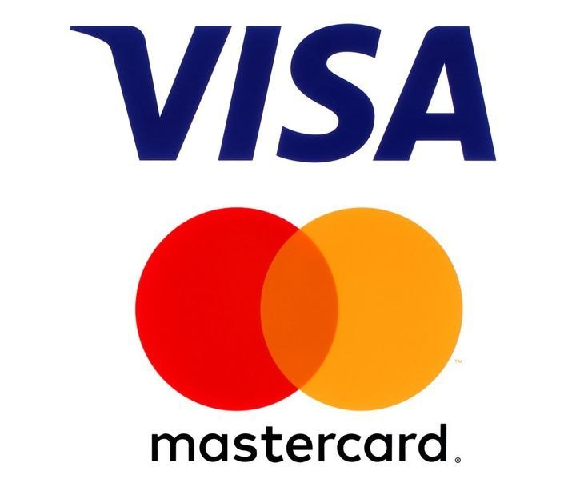
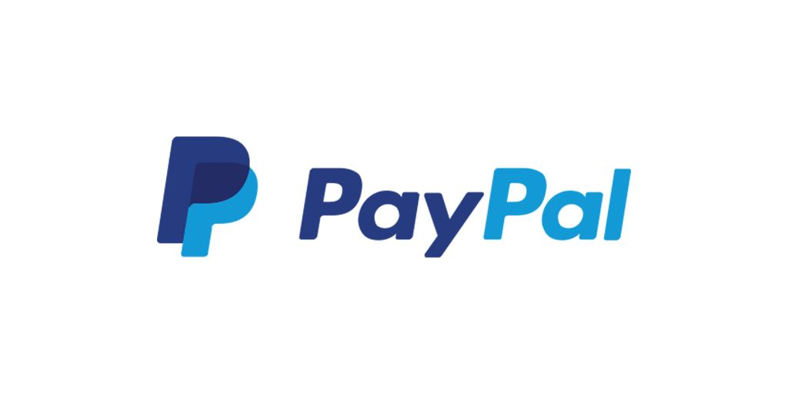
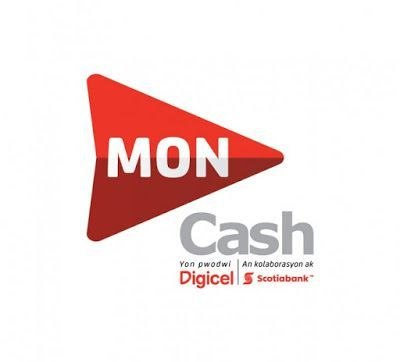
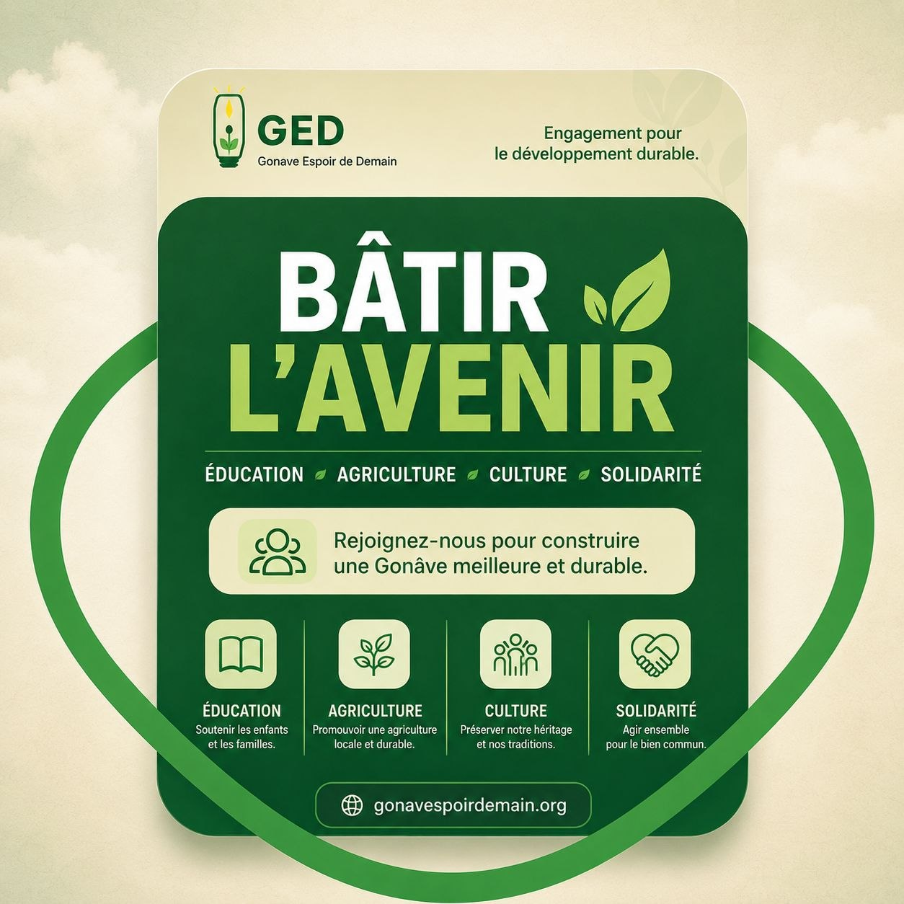
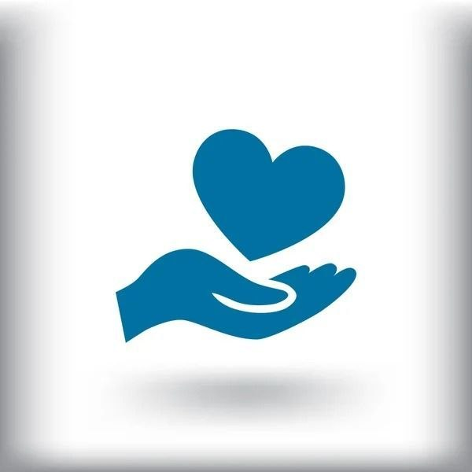
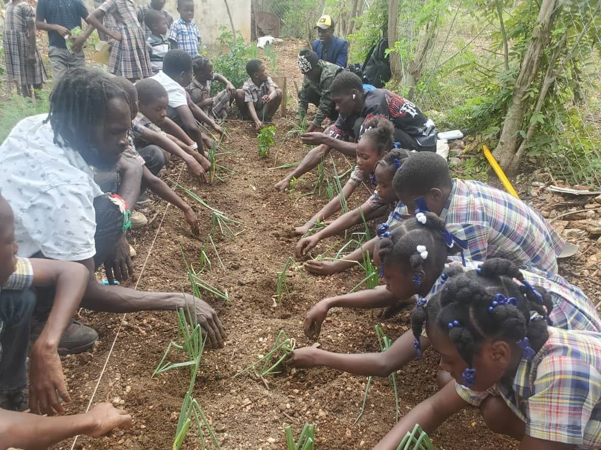
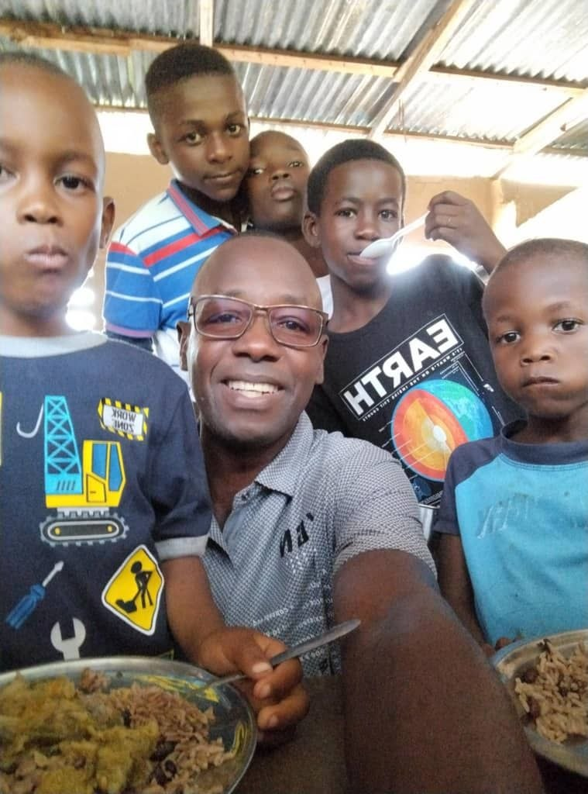
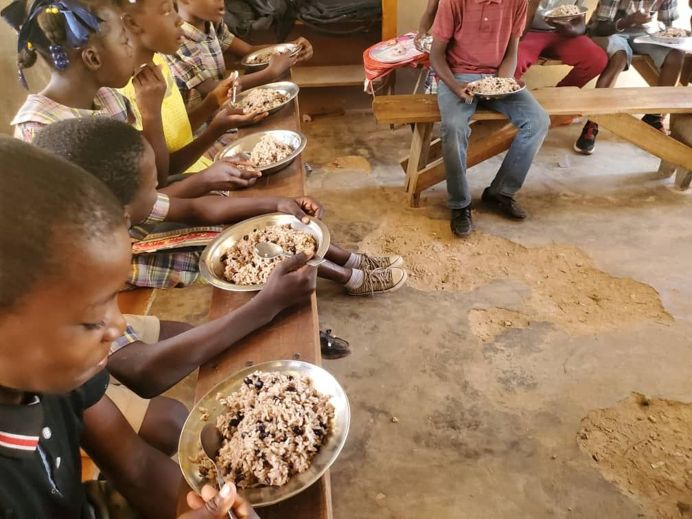

Écrivons ensemble une nouvelle histoire pour la Gonâve.
Chaque graine plantée, chaque enfant scolarisé est une promesse d'autonomie. À la Gonâve, nous ne demandons pas de la charité, mais des partenaires pour transformer le potentiel en réalité. Votre soutien n'est pas qu'un don, c'est l'étincelle qui bâtit une communauté forte, digne et fière de son héritage.
🌳
VOTRE GÉNÉROSITÉ ENRACINE LE CHANGEMENT
MENSUELUNE SEULE FOIS
$
DOLLAR AMÉRICAIN
💛 Un don de 100 $ permet de soutenir l'éducation et l'autonomie de 2 familles.
MODIFIER
✔

CARD
✔

PAYPAL
✔

MONCASH
Vous méritez de donner en toute confiance
L'intégralité de nos frais de fonctionnement est financée par des donateurs privés.
Cela garantit que 100% de votre contribution va directement aux projets sur le terrain.




Rejoignez la communauté GED
Investissez dans le développement durable et l'éducation.

Ensemble, éradiquons la faim.
Ce que vous voyez ici, c'est l'impact direct de votre générosité. En parrainant ce projet, vous garantissez un repas sain et un environnement digne à ces enfants. Transformez leur quotidien dès aujourd'hui.